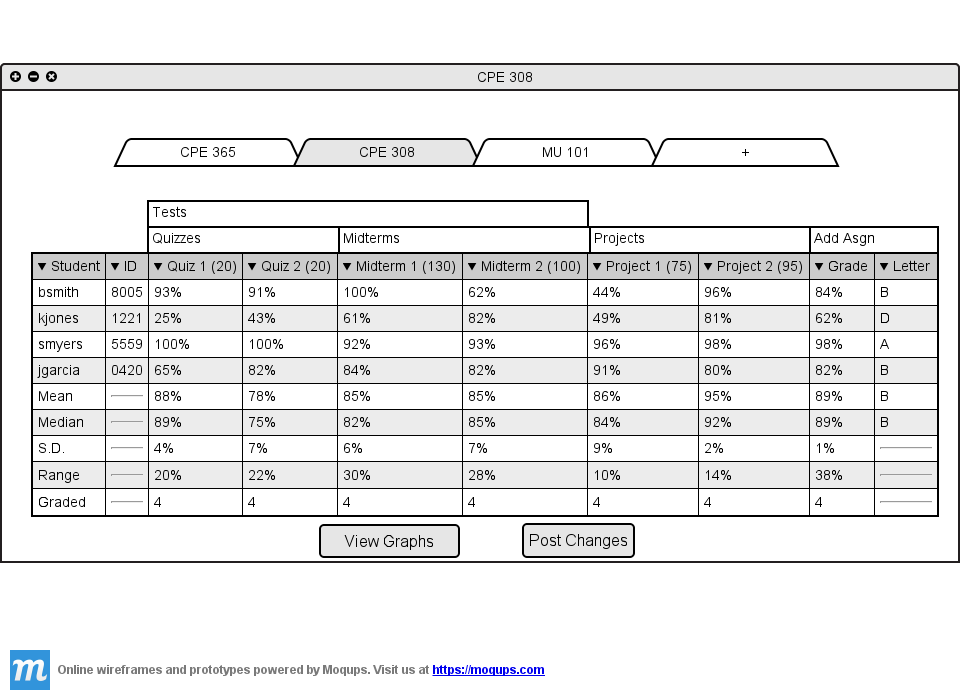
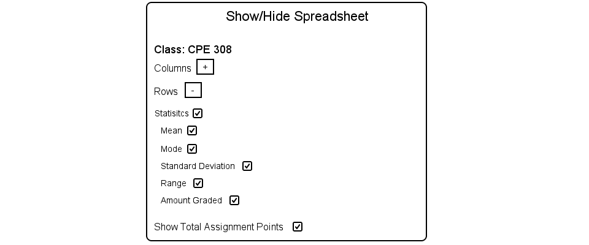

2.5.3 Expand/Collapse Spreadsheet
By default the spreadsheet displays all content except for the student 'First Name', 'Last Name',
'Major', and 'Grade' columns.

Figure 2.5.3 A: Spreadsheet with default attributes.
The teacher has the option to:
- Hide/Show any of the columns except for the Final Grade and Letter columns
- Hide/show any of the statistics rows
- Hide/Show the total assignment points in the column headers
To toggle this functionality the teacher navigates to the 'Edit' section of the menu and clicks on
'Show/Hide'. The following dialog shows.
Figure 2.5.3 B: Show Hide Spreadsheet Dialog.
The dialog has three categories, 2 of which are collapsed. The column category contains all the
columns that can be hidden/shown. The row category contains all the rows that can be hidden/show.
The last category provides the option to hide/show the total assignment points. The teacher clicks the
plus button on the column category.
Figure 2.5.3 C: Show Hide Spreadsheet Columns Category Expanded.
All the columns in the spreadsheet are displayed with check boxes. If the teacher has categories
defined the teacher has the option to hide/show entire categories. The teacher toggles the check box off
for Tests.
Figure 2.5.3 D: Test Check Box Toggled Off.
Since the Test category is a parent to multiple categories and assignments, all of its children
are toggled off. The spreadsheet now looks like this.

Figure 2.5.3 E: Test Category Hidden.
All of the Assignments that have a parent category of Test are now hidden. This functionality becomes
useful when the spreadsheet has a lot of data and the Teacher only wishes to see certain columns. The final
grades remain the same, even though the Test assignments are hidden. Now the teacher wants to display all
of the student information in the spreadsheet. The teacher toggles 'First Name', 'Last Name', 'Major, and
'Grade'.
Figure 2.5.3 F: Toggling On Student Info.
After toggling on all of the student info columns, the spreadsheet looks like the following.
Figure 2.5.4 G: Spreadsheet Displaying All Student Info.
The spreadsheet now contains all of the student info columns. The teacher wants to hide all
of the statistics rows. The teacher opens the dialog, collapses the column category, and expands
the row category.

Figure 2.5.4 H: Expanding the Row category.
The teacher now toggles off the Statistics option, which turns off all the options below it.

Figure 2.5.4 I: Toggling Off Statistics.
After toggling off statistics the spreadsheet looks like the following.
Figure 2.5.4 J: Spreadsheet Statistics Hidden.
The teacher wants to hide the total points for assignments on the assignment columns.
The teacher toggles off the 'Show Total Assignment Point' check box in Figure 2.5.4 I and
the spreadsheet now looks like the following.
Figure 2.5.4 K: Total Points for Assignments Hidden.
The column headers 'Project 1' and 'Project 2' no longer show the points their
assignments are worth.
Prev: Show Different Classes
| Next: Show Grades As
| Up: Using The Spreadsheet
| Top: index